library(tidyverse)
library(titanic)
options(digits = 3)
theme_set(theme_classic())
colors_sex <- c("mediumorchid1", "dodgerblue")
colors_survived <- c("gray65", "lightgreen")Introduction
After auditing the HarvardX’s Data Science: Visualization course I’ve found this assessment way too interesting and fun. So I decided to put all my new skills together to perform exploratory data analysis on a classic machine learning dataset: Titanic survival! My goal is to provide answers entirely through visualizations.
Background
The Titanic was a British ocean liner that struck an iceberg and sunk on its maiden voyage in 1912 from the United Kingdom to New York. More than 1,500 of the estimated 2,224 passengers and crew died in the accident, making this one of the largest maritime disasters ever outside of war. The ship carried a wide range of passengers of all ages and both genders, from luxury travelers in first-class to immigrants in the lower classes. However, not all passengers were equally likely to survive the accident. We use real data about a selection of 891 passengers to learn who was on the Titanic and which passengers were more likely to survive.
Libraries, Customizations, and Data
Defining the titanic dataset.
titanic <- titanic_train %>%
select(Survived, Pclass, Sex, Age, SibSp, Parch, Fare) %>%
mutate(Survived = factor(Survived),
Pclass = factor(Pclass),
Sex = factor(Sex))
head(titanic) Survived Pclass Sex Age SibSp Parch Fare
1 0 3 male 22 1 0 7.25
2 1 1 female 38 1 0 71.28
3 1 3 female 26 0 0 7.92
4 1 1 female 35 1 0 53.10
5 0 3 male 35 0 0 8.05
6 0 3 male NA 0 0 8.46str(titanic)'data.frame': 891 obs. of 7 variables:
$ Survived: Factor w/ 2 levels "0","1": 1 2 2 2 1 1 1 1 2 2 ...
$ Pclass : Factor w/ 3 levels "1","2","3": 3 1 3 1 3 3 1 3 3 2 ...
$ Sex : Factor w/ 2 levels "female","male": 2 1 1 1 2 2 2 2 1 1 ...
$ Age : num 22 38 26 35 35 NA 54 2 27 14 ...
$ SibSp : int 1 1 0 1 0 0 0 3 0 1 ...
$ Parch : int 0 0 0 0 0 0 0 1 2 0 ...
$ Fare : num 7.25 71.28 7.92 53.1 8.05 ...Question 1: Variable Types
Instructions: Inspect the data and also use ?titanic_train to learn more about the variables in the dataset. Match these variables from the dataset to their variable type. There is at least one variable of each type (ordinal categorical, non-ordinal (nominal) categorical, continuous, discrete).
Checking if Age variable is discrete or continuous…
unique(titanic$Age) [1] 22.00 38.00 26.00 35.00 NA 54.00 2.00 27.00 14.00 4.00 58.00 20.00
[13] 39.00 55.00 31.00 34.00 15.00 28.00 8.00 19.00 40.00 66.00 42.00 21.00
[25] 18.00 3.00 7.00 49.00 29.00 65.00 28.50 5.00 11.00 45.00 17.00 32.00
[37] 16.00 25.00 0.83 30.00 33.00 23.00 24.00 46.00 59.00 71.00 37.00 47.00
[49] 14.50 70.50 32.50 12.00 9.00 36.50 51.00 55.50 40.50 44.00 1.00 61.00
[61] 56.00 50.00 36.00 45.50 20.50 62.00 41.00 52.00 63.00 23.50 0.92 43.00
[73] 60.00 10.00 64.00 13.00 48.00 0.75 53.00 57.00 80.00 70.00 24.50 6.00
[85] 0.67 30.50 0.42 34.50 74.00Age is a continuous variable.
| Variable | Description | Variable Type |
|---|---|---|
Survived |
Passenger Survival Indicator | nominal categorical |
Pclass |
Passenger Class | ordinal categorical |
Sex |
Sex | nominal categorical |
Age |
Age | continuous |
SibSp |
Number of Siblings/Spouses Aboard | discrete |
Parch |
Number of Parents/Children Aboard | discrete |
Fare |
Passenger Fare | continuous |
Question 2: Demographics of Titanic Passengers
Instructions: Make density plots of age grouped by sex. Try experimenting with combinations of faceting, alpha blending, stacking and using variable counts on the y-axis to answer the following questions. Some questions may be easier to answer with different versions of the density plot.
titanic %>%
ggplot(aes(Age)) +
geom_density(aes(color = Sex), size = 0.7) +
scale_color_manual(values = colors_sex) +
geom_vline(xintercept = c(18, 35), linetype = 2) +
geom_text(aes(x = 18, y = 0.031, label= "18", hjust = 1.5)) +
geom_text(aes(x = 35, y = 0.031, label= "35", hjust = -0.5)) +
theme(legend.position = "top") +
ylab("density")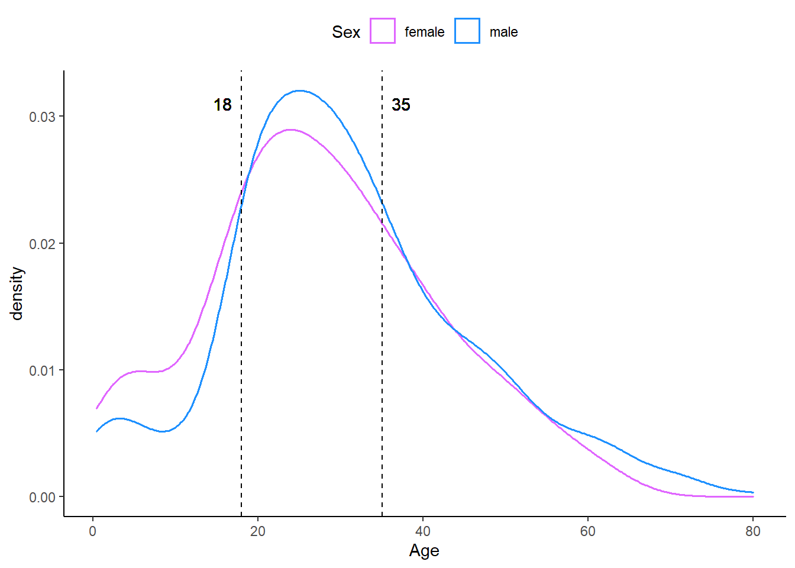
titanic %>%
ggplot(aes(Age, fill = Sex)) +
geom_density(alpha = 0.3) +
scale_fill_manual(values = colors_sex) +
geom_vline(xintercept = 17, linetype = 2) +
geom_text(aes(x = 17, y = 0.031, label= "17", hjust = 1.5)) +
theme(legend.position = "top") +
ylab("density")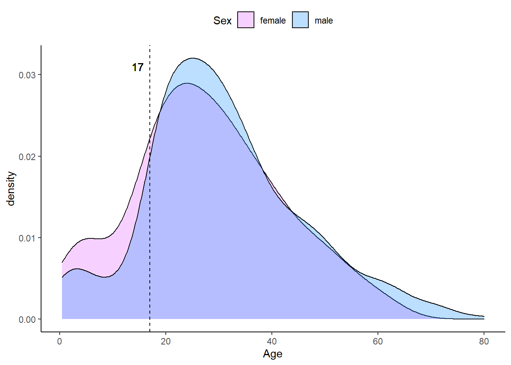
titanic %>%
ggplot(aes(Age, ..count.., fill = Sex)) +
geom_density(alpha = 0.7) +
facet_grid(Sex ~ .) +
scale_fill_manual(values = colors_sex) +
geom_vline(xintercept = 40, linetype = 2) +
geom_text(aes(x = 40, y = 14, label= "40", hjust = -0.5)) +
theme(legend.position = "top")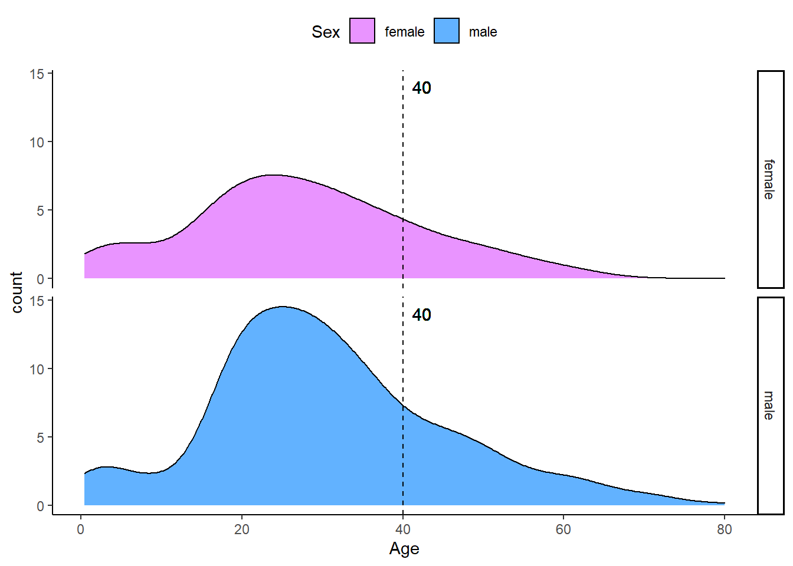
Which of the following are true?
Select all correct answers
- ✅ Females and males had the same general shape of age distribution.
- ✅ } The age distribution was bimodal, with one mode around 25 years of age and a second - - smaller mode around 5 years of age.
- ❌ There were more females than males.
- ✅ The count of males of age 40 was higher than the count of females of age 40.
- ✅ The proportion of males age 18-35 was higher than the proportion of females age 18-35.
- ✅ The proportion of females under age 17 was higher than the proportion of males under age 17.
- ❌ The oldest passengers were female.
Question 3: QQ-plot of Age Distribution
Instructions: Use geom_qq() to make a QQ-plot of passenger age and add an identity line with geom_abline(). Filter out any individuals with an age of NA first.
params <- titanic %>%
filter(!is.na(Age)) %>%
summarize(mean = mean(Age), sd = sd(Age))
params mean sd
1 29.7 14.5titanic %>% ggplot(aes(sample = Age)) +
geom_qq(dparams = params) +
geom_abline()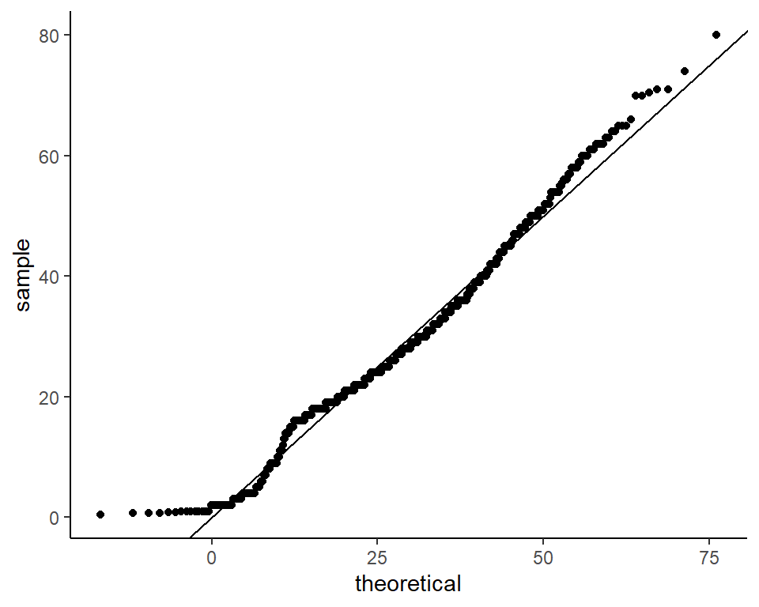
Which of the following is the correct plot according to the instructions above?
- ✅ The plot above.
Question 4: Survival by Sex
Instructions: To answer the following questions, make barplots of the Survived and Sex variables using geom_bar(). Try plotting one variable and filling by the other variable. You may want to try the default plot, then try adding position = position_dodge() to geom_bar() to make separate bars for each group.
titanic %>%
ggplot(aes(Survived, fill = Sex)) +
geom_bar(width = 0.7, color = "white") +
scale_fill_manual(values = colors_sex)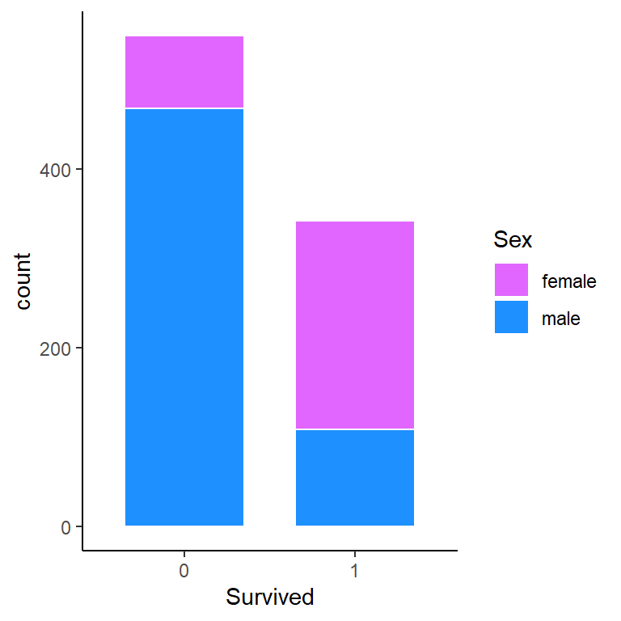
titanic %>%
ggplot(aes(Sex, fill = Survived)) +
geom_bar(width = 0.8, position = position_dodge(0.85)) +
scale_fill_manual(values = colors_survived)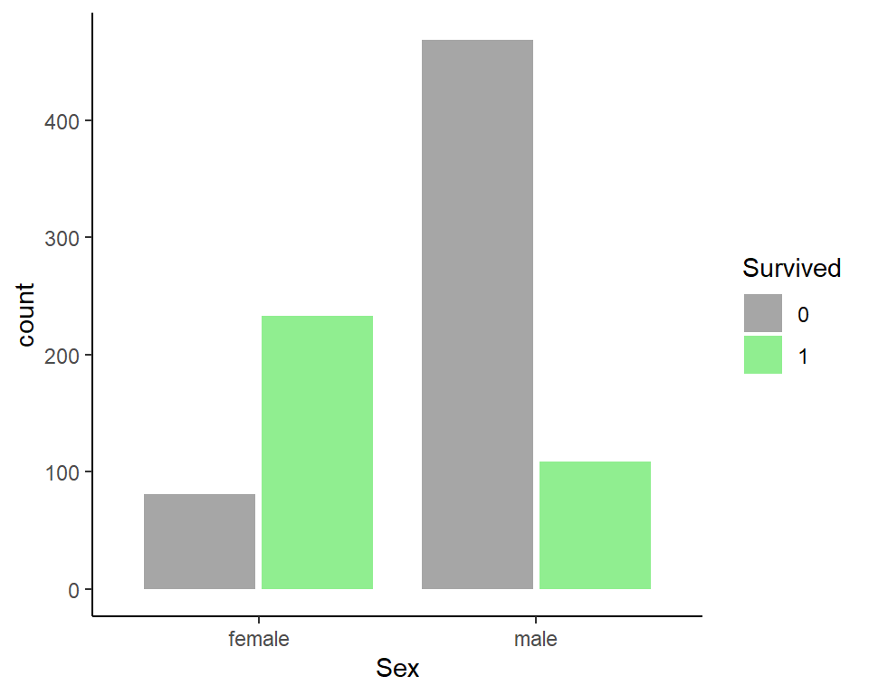
Which of the following are true?
Select all correct answers.
- ✅ Less than half of passengers survived.
- ✅ Most of the survivors were female.
- ❌ Most of the males survived.
- ✅ Most of the females survived.
Question 5: Survival by Age
Instructions: Make a density plot of age filled by survival status. Change the y-axis to count and set alpha = 0.2.
The following answers were offered for all three questions:
- 0-8
- 10-18
- 18-30
- 30-50
- 50-70
- 70-80
Which age group is the only group more likely to survive than die?
titanic %>%
ggplot(aes(Age, y = ..count.., fill = Survived)) +
geom_density(alpha = 0.5) +
scale_fill_manual(values = colors_survived) +
geom_vline(xintercept = 8, linetype = 2) +
geom_text(aes(x = 8, y = 14, label= "8", hjust = -0.5))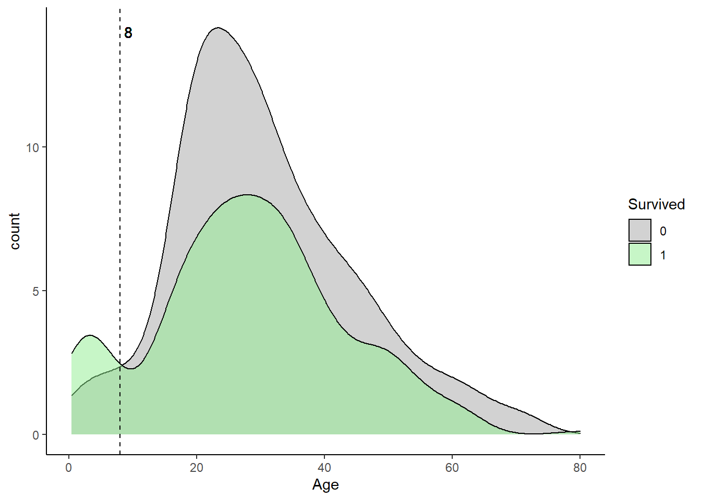
- ✅ Age group 0-8.
Which age group had the most deaths?
It’s hard to tell from the previews plot I’ll have to make a new column Age group based on the offered answers.
titanic2 <- titanic %>%
filter(!is.na(Age)) %>%
mutate(`Age group` = case_when(
Age >0 & Age <=8 ~ "0-8",
Age >=10 & Age <=18 ~ "10-18",
Age >=18 & Age <=30 ~ "18-30",
Age >=30 & Age <=50 ~ "30-50",
Age >=50 & Age <=70 ~ "50-70",
Age >=70 & Age <=80 ~ "70-80"))titanic2 %>%
filter(!is.na(`Age group`)) %>%
ggplot(aes(`Age group`, fill = Survived)) +
geom_bar(width = 0.7, color = "white") +
scale_fill_manual(values = colors_survived)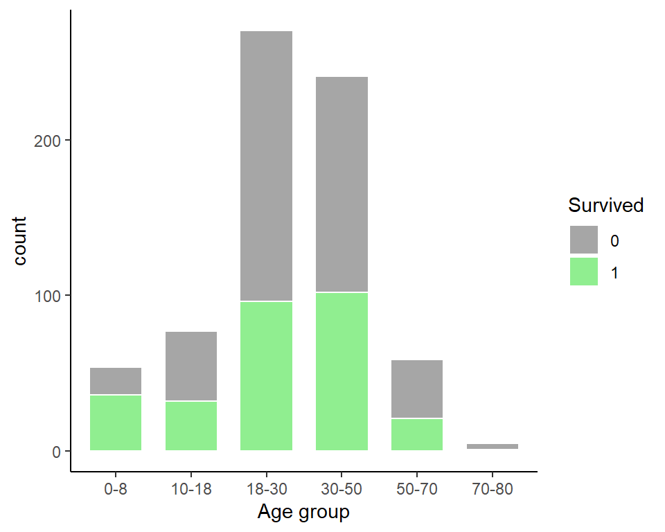
- ✅ Age group 18-30.
Which age group had the highest proportion of deaths?
titanic2 %>%
filter(!is.na(`Age group`)) %>%
ggplot(aes(`Age group`, fill = Survived)) +
geom_bar(position = "fill", width = 0.7, color = "white") +
scale_fill_manual(values = colors_survived)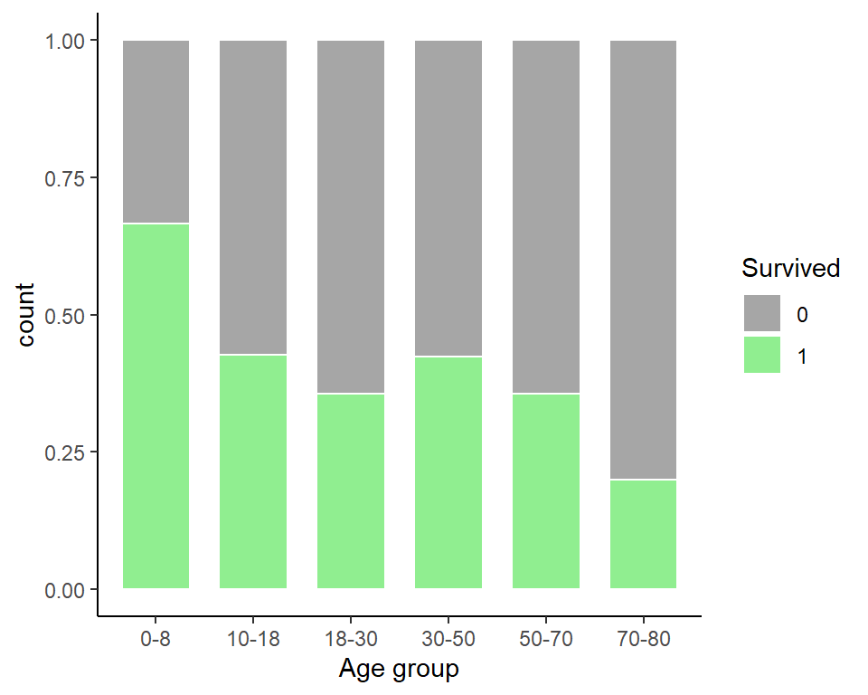
- ✅ Age group 70-80
Question 6: Survival by Fare
Instructions: Filter the data to remove individuals who paid a fare of 0. Make a boxplot of fare grouped by survival status. Try a log2 transformation of fares. Add the data points with jitter and alpha blending.
set.seed(123)
titanic %>% filter(Fare != 0) %>%
ggplot(aes(Survived, Fare)) +
geom_boxplot(fill = colors_survived, width = 0.5, alpha = 0.5) +
geom_jitter(width = 0.1, alpha = 0.2) +
scale_y_continuous(trans = "log2")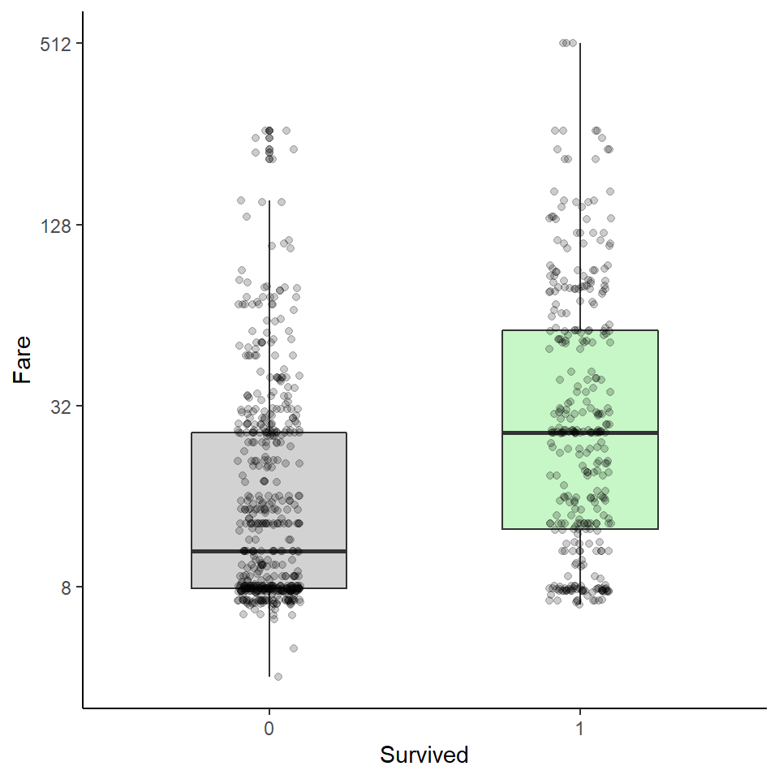
Which of the following are true?
Select all correct answers.
- ✅ Passengers who survived generally payed higher fares than those who did not survive.
- ❌ The interquartile range for fares was smaller for passengers who survived.
- ✅ The median fare was lower for passengers who did not survive.
- ❌ Only one individual paid a fare around $500. That individual survived. (3 individuals survived)
- ✅ Most individuals who paid a fare around $8 did not survive.
Question 7: Survival by Passenger Class
Instructions: The Pclass variable corresponds to the passenger class. Make three barplots. For the first, make a basic barplot of passenger class filled by survival. For the second, make the same barplot but use the argument position = position_fill() to show relative proportions in each group instead of counts. For the third, make a barplot of survival filled by passenger class using position = position_fill()
titanic %>%
ggplot(aes(Pclass, fill = Pclass)) +
geom_bar(width = 0.7) +
geom_text(aes(label = ..count..), stat = "count", vjust = -1) +
expand_limits(y = 530) +
ylab("count")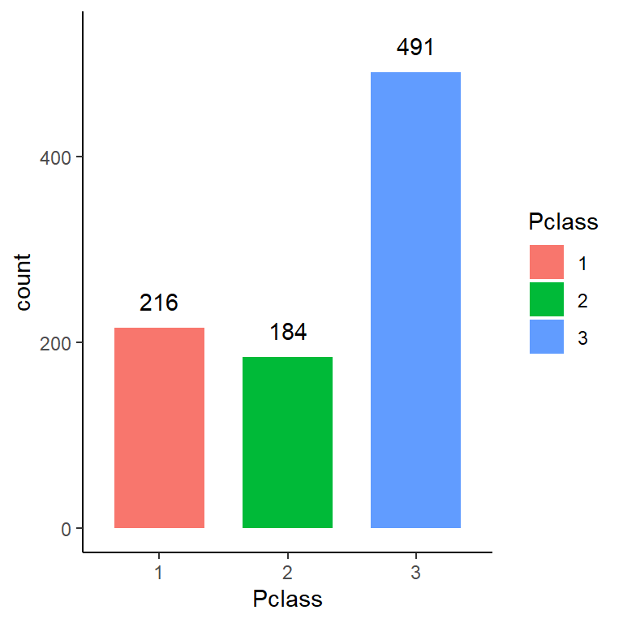
titanic %>%
ggplot(aes(Pclass, fill = Survived)) +
geom_bar(width = 0.7, position = position_fill(), color = "white") +
scale_fill_manual(values = colors_survived)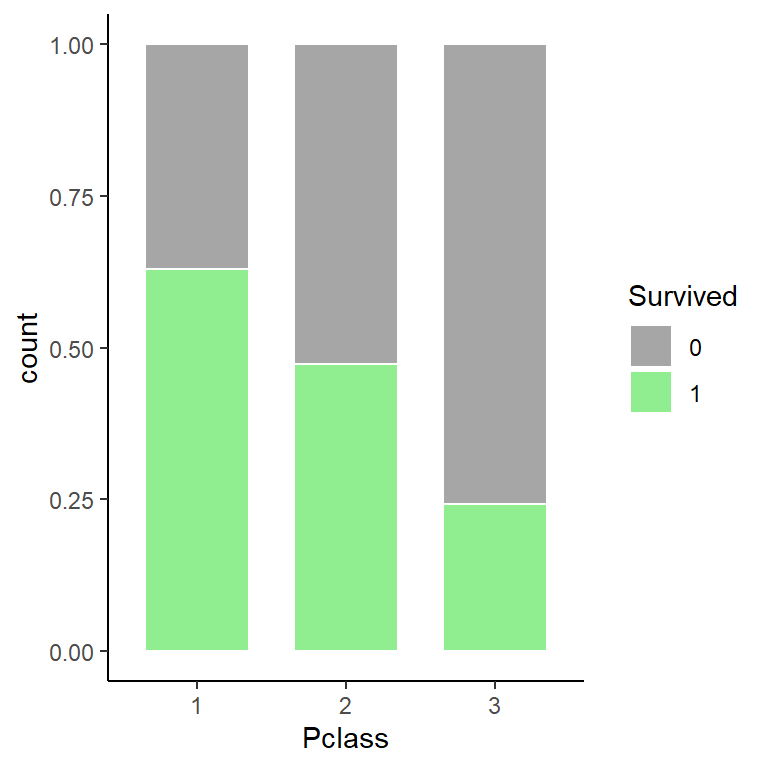
titanic %>%
ggplot(aes(Pclass, fill = Survived)) +
geom_bar(width = 0.8, position = position_dodge(0.85)) +
scale_fill_manual(values = colors_survived)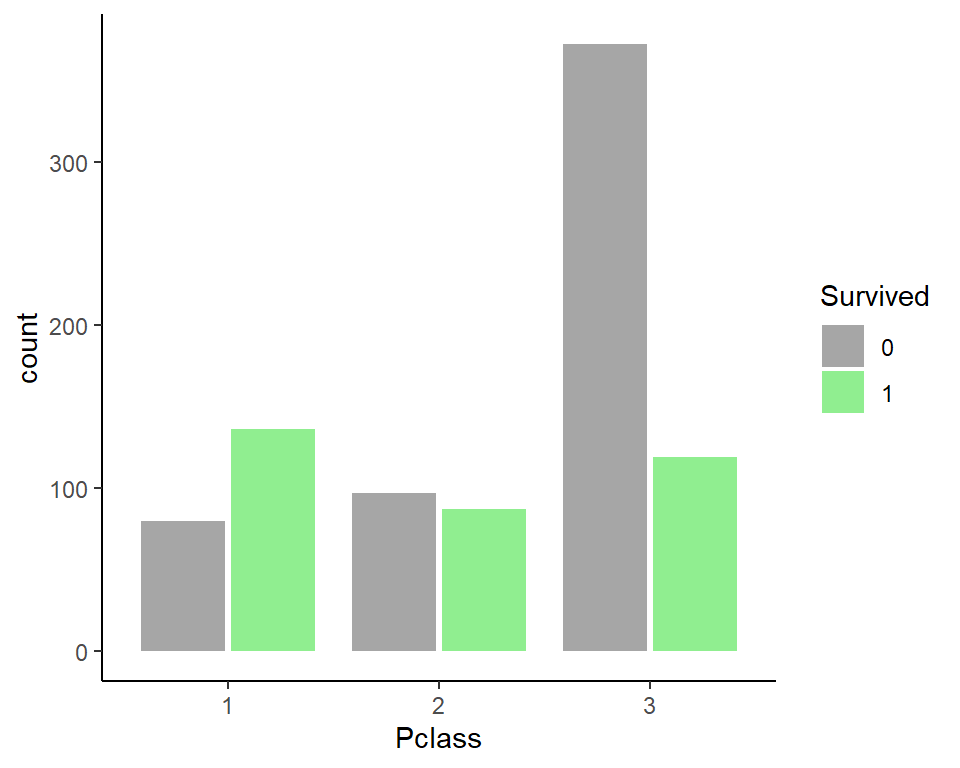
titanic %>%
ggplot(aes(Survived, fill = Pclass)) +
geom_bar(width = 0.7, position = position_fill(), color = "white") 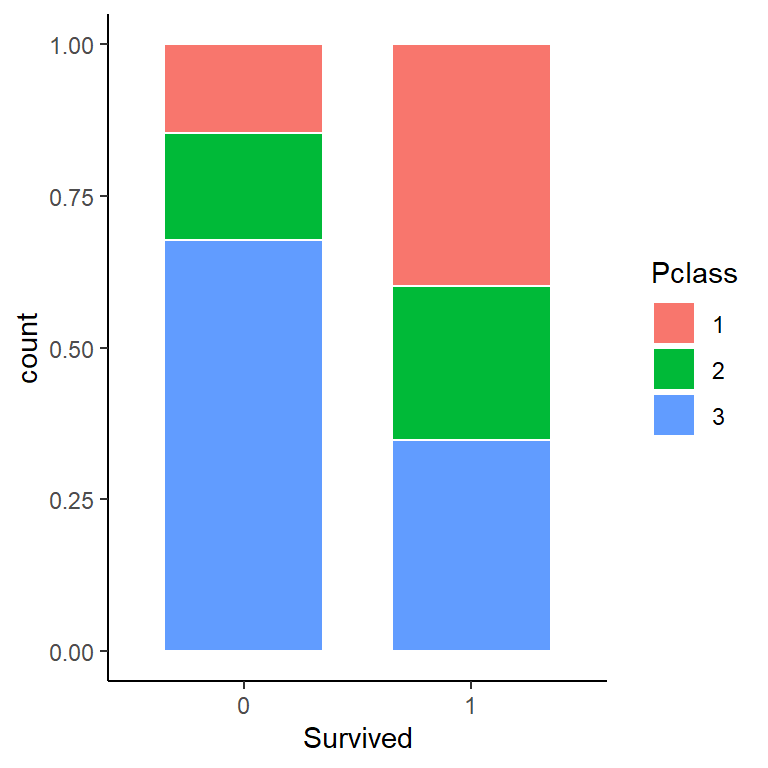
Which of the following are true?
Select all correct answers.
- ✅ There were more third class passengers than passengers in the first two classes combined.
- ❌ There were the fewest passengers in first class, second-most passengers in second class, and most passengers in third class.
- ✅ Survival proportion was highest for first class passengers, followed by second class. Third-class had the lowest survival proportion.
- ✅ Most passengers in first class survived. Most passengers in other classes did not survive.
- ❌ The majority of survivors were from first class.
- ✅ The majority of those who did not survive were from third class.
Question 8: Survival by Age, Sex and Passenger Class
Instructions: Create a grid of density plots for age, filled by survival status, with count on the y-axis, faceted by sex and passenger class.
titanic %>%
ggplot(aes(Age, ..count.., fill = Pclass)) +
geom_density(alpha=0.5) 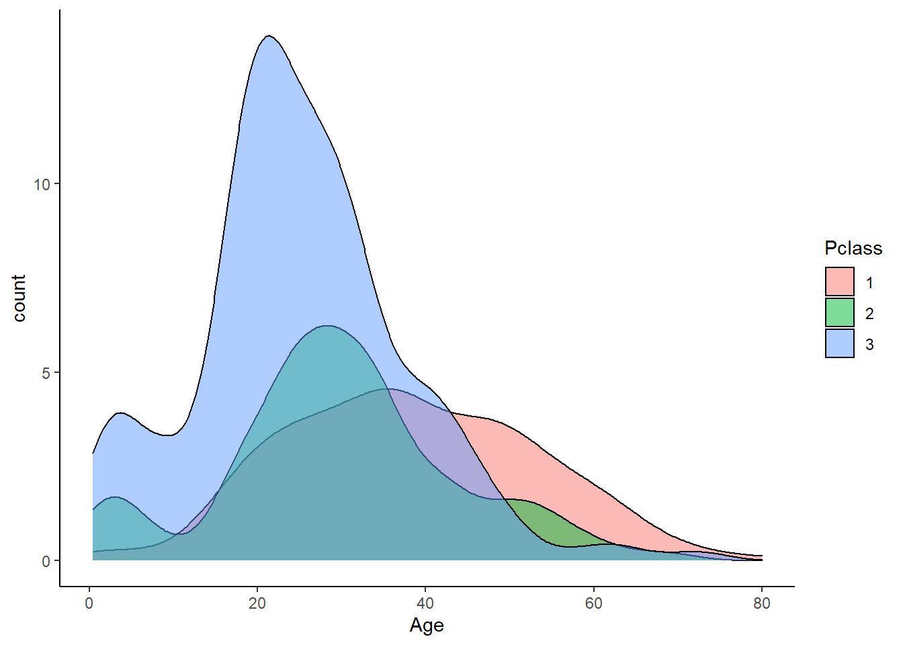
titanic %>%
ggplot(aes(Age, ..count.., fill = Survived)) +
geom_density(alpha=0.5) +
facet_grid((Sex ~ Pclass)) +
scale_fill_manual(values = colors_survived) +
theme(panel.border = element_rect(colour = "black", fill = NA)) +
theme(legend.position = "top")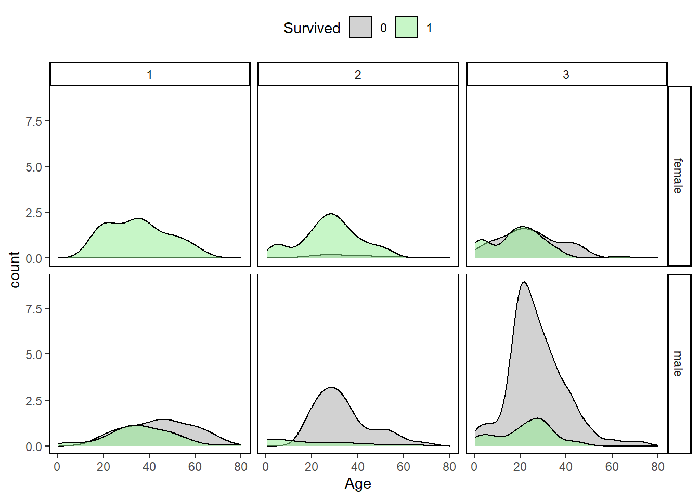
Which of the following are true?
Select all correct answers.
- ✅ The largest group of passengers was third-class males.
- ❌ The age distribution is the same across passenger classes.
- ❌ The gender distribution is the same across passenger classes.
- ✅ Most first-class and second-class females survived.
- ✅ Almost all second-class males did not survive, with the exception of children.
That’s all. Thanks for reading!